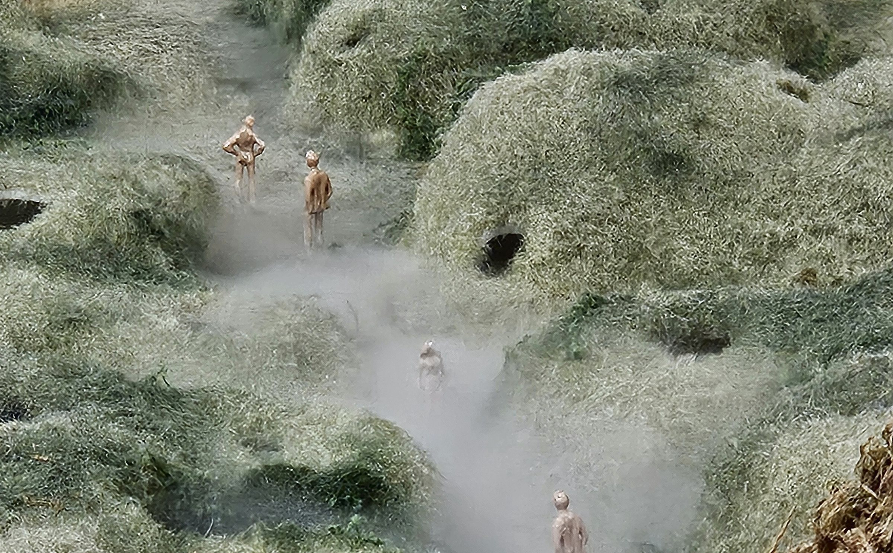
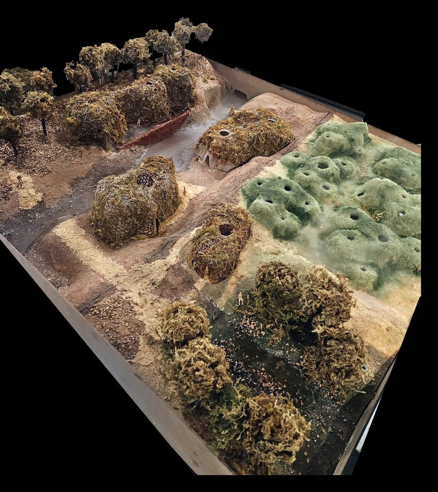
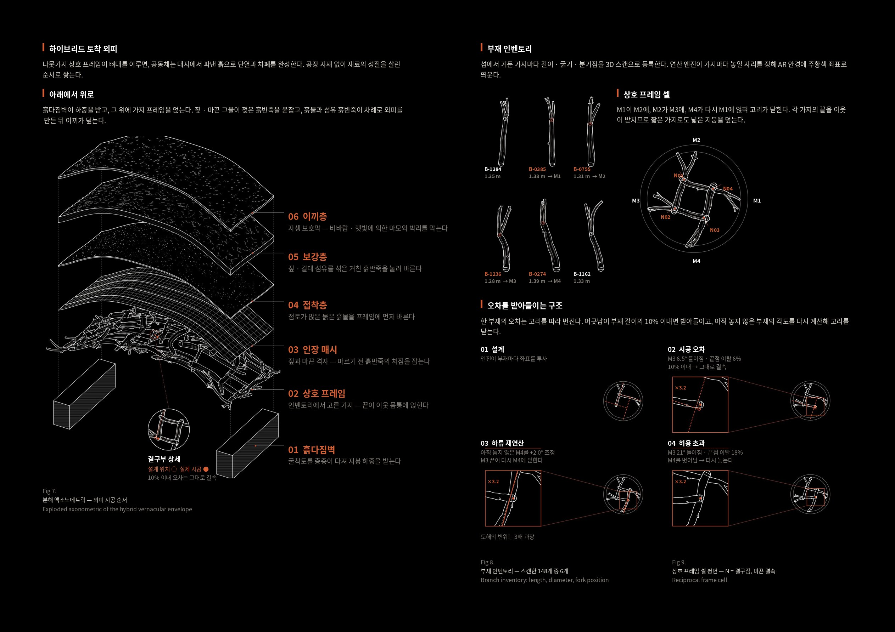
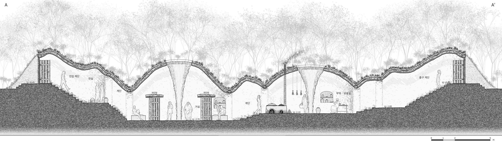

Process
AI와 설계하기Designing with AI — 설계 단계마다 AI를 어디에 쓰는가
설계의 판단은 사람이 하고, 반복과 계산은 AI와 나눈다. 아래는 졸업설계를 하며 실제로 만든 Grasshopper 컴포넌트들을 설계 단계 순서로 정리한 것이다. 모든 컴포넌트는 Claude와 대화하며 Python 코드로 작성했다.
대지 읽기Reading the ground
기존
지형도를 캐드로 따고, 등고선을 한 줄씩 올려 지형 모형을 만든다.
AI와 함께
하이트맵에서 만든 지형 메시를 자르고, 다듬고, 겹치는 작은 도구를 필요할 때마다 만든다. 단면 추출, 윗면만 남기기, 다중 스케일 합성 등 10여 개.
사람의 몫 무엇을 볼지 정하는 일. 섬의 물길과 능선을 어디서 자를지.
unnamed.gh · 컴포넌트 12개import Rhino.Geometry as rg
# Cut - 메시를 수평면으로 잘라 단면 추출
plane = rg.Plane(rg.Point3d(0, 0, plane_z), rg.Vector3d.ZAxis)
polylines = rg.Intersect.Intersection.MeshPlane(mesh, plane)
프로그램에서 매스로From program to mass
기존
면적표를 보고 버블 다이어그램을 그린 뒤, 매스를 손으로 하나씩 만든다.
AI와 함께
가구 수, 면적, 천장고를 넣으면 셸 군집이 생기는 "집합주거 마스터"를 만들었다. 가구와 공용을 따로 입력하고, 시드를 바꾸면 배치가 바뀐다.
사람의 몫 가구 구성과 공용 프로그램, 몇 개의 셸이 한 클러스터가 될지.
클러스터 생성 알고리즘.gh · v4"""
집합주거 마스터 v4: 가구/공용 입출력 분리
INPUTS (가구): areas_house, heights_house, seeds_house, anchors_house
INPUTS (공용): areas_common, heights_common, seeds_common
"""
대안 100개와 평가100 alternatives, scored
기존
대안 서너 개를 만들어 크리틱에서 고른다.
AI와 함께
시드 두 축으로 매스 100개를 격자로 펼치고, 각 매스에 점수를 매겨 상위안을 "트로피 진열장"에 따로 세운 뒤 자동으로 베이크한다.
사람의 몫 점수 기준을 정하는 일, 그리고 점수가 놓친 좋은 안을 알아보는 눈.
매스 생성.gh · 매스평가.gh"""
100개 매스 매트릭스 + 트로피 진열장 + 자동 베이크
세로축: master_seed (배치 변경)
가로축: shell_seeds (셸 형태 변경)
"""
평면 구성Plan layouts
기존
동선을 여러 번 스케치하며 실 배치를 바꾼다.
AI와 함께
동선 규칙(공용은 관통, 개인은 스쳐가기)을 코드로 정하고, 네 가지 위상(Linear Spine, Distributed, Hierarchical, Flow Through)으로 평면을 만든다. 구역 폐곡선을 감싸는 외곽선도 자동으로 뽑는다.
사람의 몫 나선형처럼 "현실적인 동선이 아닌" 패턴을 걸러내는 판단. v3에서 실제로 뺐다.
평면생성.gh · v5.7까지"""
Step 1 v4: 4 Topology Patterns
- 나선형 (Spiral) 제거 (현실적 동선 X)
- 동선 규칙: 공용 관통 + 개인 스쳐가기
"""
손 스케치를 입력으로Hand-drawn input
기존
스케치를 보고 3D를 다시 모델링한다.
AI와 함께
라이노에 손으로 그린 외곽선, 공용·개인 영역, 능선을 그대로 입력받아 외피를 만든다. AI가 형태를 정하는 게 아니라 손의 선이 코드의 입력이 된다.
사람의 몫 선을 긋는 일 자체.
매스 생성기 (수동).gh"""
Envelope Hand-Drawn v2
라이노에서 손으로 그린 모든 디자인 정보 입력:
1. 클러스터 외곽 footprint 2. 공용공간 영역들
3. 개인공간 영역들 4. 동선/능선
"""
배치Placing on the site
기존
클러스터를 대지 위에 하나씩 옮겨 본다.
AI와 함께
여러 클러스터를 서로 겹치지 않게 대지에 흩뿌린다. Bridson 알고리즘이 막히자 대화로 원인을 찾고 dart throwing으로 바꿨다(v6).
사람의 몫 어디에 모이고 어디를 비울지.
클러스터 배치.gh · v6"""
Envelope Scatter v6 — Dart Throwing
v5 문제: Bridson 알고리즘이 첫 점 이후 추가 못함
v6 해결: 단순 랜덤 + 충돌 검사 반복
"""
재료에서 나오는 구조Structure from material
기존
구조 부재를 하나씩 그리거나, 플러그인 예제를 고쳐 쓴다.
AI와 함께
나뭇가지 상호 프레임(v5), 다짐벽을 물결치는 켜로 나누기, 나무 기둥과 오큘러스, 셸 두께 그라데이션(벽 600 → 지붕 300), 한증막 증기 구멍까지 재료의 성질을 규칙으로 옮겼다.
사람의 몫 흙과 나뭇가지가 실제로 어떻게 쌓이고 엮이는지에 대한 이해.
격자 생성.gh · 다짐벽.gh · 평면생성.gh"""
Rammed Wall Layer Split v2
다짐벽을 수평 파도치는 곡면으로 split → 띠들.
layer_height 180 · height_var 0.25 · wave_amplitude 40
"""
도면과 표현Drawings
기존
캐드 도면을 일러스트에서 하나씩 꾸민다. 피드백이 오면 처음부터 다시.
AI와 함께
3D 모델을 잘라 단면과 평면을 코드로 그리고, 해치와 식재 표현을 규칙으로 만든다. 피드백이 오면 규칙만 고쳐 전체를 다시 그린다. 주거 전개단면은 이렇게 v1에서 v25까지 왔다.
사람의 몫 "흙 계단은 깎아 만든 것처럼", "세로 해치는 기둥처럼 보인다" 같은 눈의 판단.
이번 포트폴리오 도면 작업
